消化与内分泌系统1
甲状腺肿
学习目标
- 甲状腺肿的概念、类型和病变特点
- 甲状腺肿的病因和发病机制
- 弥漫性甲状腺肿的临床病理
概念
甲状腺肿（goiter）是指由于腺上皮增生和胶质储存（有些类型是减少的）伴甲状腺激素异常分泌而产生的甲状腺肿大，分为弥漫性非毒性甲状腺肿和弥漫性毒性甲状腺肿
弥漫性非毒性甲状腺肿（地方性甲状腺肿）
原因
- 缺碘
- 致甲状腺肿因子的作用（钙、氟影响碘的吸收；氰化物抑制碘在甲状腺内的转运；硫氰酸盐和过氯酸盐妨碍碘向甲状腺聚集；药物）
- 高碘（占据酶活性位置，但是不发挥作用，碘被过多摄入后，阻碍了甲状腺内碘的有机化过程，从而抑制T4的合成，促使TSH分泌增加而产生甲状腺肿）
- 遗传和免疫
机理
缺碘致甲状腺激素分泌不足，促甲状腺激素分泌增多，甲状腺滤泡上皮增生，滤泡内胶质堆积而致甲状腺肿大
分期
增生期—弥漫性增生性甲状腺肿
- 肉眼观：甲状腺弥漫性对称性中度肿大，一般不超过150g（正常为20～40g），表面光滑
- 镜下观：
- 滤泡上皮增生呈现立方或者低柱状，伴小滤泡的形成（新生）
- 胶质较少
- 间质充血
胶质贮积期—弥漫性胶质性甲状腺肿
- 因长期缺碘，胶质大量储积
- 对称性弥漫性肿大，重200～300g，表面光滑，切面淡褐色或者棕褐色，半透明胶冻状，蜂窝状。
- 光镜下
- 滤泡大小不等，滤泡腔高度扩大
- 腔内大量胶质贮积，稀薄，大部分细胞变扁平
- 部分上皮增生，乳头形成（增生导致的）
结节期—结节性甲状腺肿
- 肉眼，甲状腺呈不对称结节状肿大，结节大小不等，有的结节境界清楚，常无完整的包膜，但是有纤维间隔（区别于肿瘤）
- 有争议：会不会发展为癌症？但是现在不太提了
- 切面出血坏死、囊性变、钙化、瘢痕
- 镜下观
- 部分滤泡上皮成柱状核乳头状增生，小滤泡形成
- 部分上皮复旧或萎缩，胶质储存
- 间质纤维组织增生，包绕形成大小不一的结节状病灶
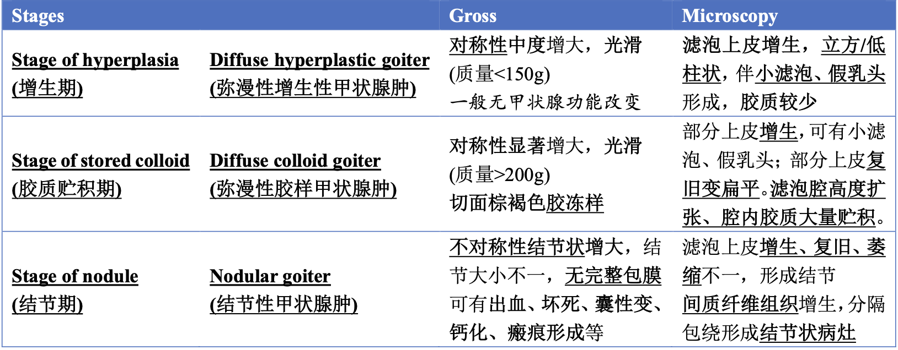
弥漫性毒性甲状腺肿、甲亢、突眼性甲状腺肿
吸收空泡——特征性、表明胶质稀疏，可以用于镜下区别弥漫性毒性/非毒性甲状腺肿！！！
病理变化
- 肉眼观，甲状腺弥漫性对称性肿大，为正常的2～4倍，表面光滑，血管充血，质软，切面灰红呈现分叶状，胶质少，无结节，质实如肌肉
- 光镜下
- 滤泡上皮增生，有的呈现乳头状，并有小滤泡的形成

- 胶质稀薄，滤泡周围胶质出现吸收空泡（胶质稀薄导致，是特征性的变化，区别毒性和非毒性）
- 间质血管丰富，充血，淋巴组织增生、浸润
-
滤泡基底膜上有lgG沉着
-
心脏增大（明显）、脾脏、胸腺增大
- 血液中T3、T4明显增高，怕热多汗，疲乏无力
- 甲状腺肿
- 眼征，良性、恶性突眼征
甲状腺炎
亚急性甲状腺炎
与病毒有关的肉芽肿性炎症，起病急，病程短
病理变化
- 甲状腺不均匀结节状，可见坏死和瘢痕
- 镜下
- 灶性分布，部分滤泡破坏，胶质外溢，肉芽肿形成，多量中性粒细胞和嗜酸性粒细胞，脓肿，有异物巨细胞，但是无干酪样坏死（结核特征样改变）
慢性甲状腺炎
（一）慢性淋巴细胞性甲状腺炎——>是一种自身免疫病
又称桥本甲状腺炎（桥本病），自身免疫性疾病——>自身免疫性甲状腺炎
病理改变
- 肉眼，甲状腺弥漫性对称性肿大，重量一般为60～200g，被膜增厚，与周围组织无黏连，切面分叶状，色灰白、灰黄
- 镜下，甲状腺广泛破坏，萎缩，大量淋巴细胞浸润，滤泡细胞形成，纤维组织增生
（二）纤维素性甲状腺炎
又称为Riedel甲状腺肿或者木样甲状腺炎，原因不明，罕见
病理变化
- 甲状腺肿大，呈结节状
- 切面灰白，质硬似木状，与周围组织明显黏连
- 镜下
- 滤泡萎缩，大量纤维组织增生
- 玻璃样变，淋巴细胞浸润
甲状腺肿瘤
甲状腺腺瘤Thyroid adenoma
是甲状腺腺泡上皮发生的一种良性肿瘤，中青年女性多见
有完整的包膜，常压迫周围的组织，与周围组织的界限清楚，直径一般为3～5cm，多为单发，切面多为实性，色暗红或棕黄，并可并发出血囊性变，钙化，纤维化。
| 甲状腺肿 | 甲状腺腺瘤 | |
|---|---|---|
| 数目 | 多发 | 单发 |
| 包膜 | 无 | 有 |
| 滤泡 | 大小不一，较大 | 大小较一致，较小 |
| 和周围组织的关系 | 无压迫，有相似的病变 | 有压迫，正常 |
低风险滤泡源性肿瘤
是指形态和生物学行为介于良恶性肿瘤之间的交界性肿瘤，转移极低
多取材
- 具有乳头状核特征的非侵袭性甲状腺滤泡肿瘤
- 恶性潜能未定的甲状腺肿瘤
- 透明变梁状肿瘤
甲状腺瘤Thyroid carcinoma
- 乳头状瘤
- 球形，直径约3cm，无包膜，质地硬，囊内可见乳头
- 癌的直径小于1cm，称为微小癌，
- 镜下：乳头分支多，间质可见钙化小体，即砂粒体，癌细胞核呈现毛玻璃样，无核仁
- 滤泡癌
- 结节状，有包膜，但是血管和/或者包膜浸润，部分包膜不完整，切面灰白，质软
- 光镜下，可见不同分化程度的滤泡，分化极好的滤泡癌难以和腺癌鉴别，需观察是否有包膜和血管侵犯来鉴别
- 髓样癌
- 质地实而软，可能有假包膜，核分裂象少见，癌呈巢状核乳头状，间质常有淀粉样物质沉着
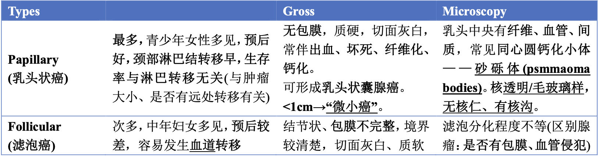
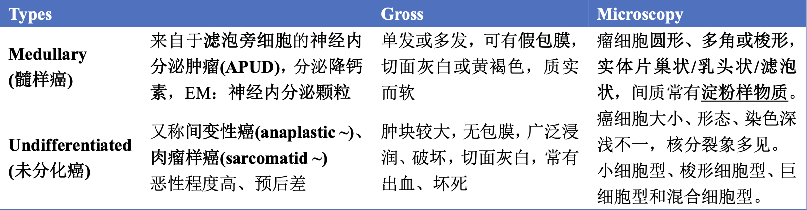
甲状腺功能低下
是甲状腺激素合成和释放减少二出现的综合症，可表现为克汀病或者黏液水肿
- 克汀病又称呆小病
- 黏液水肿
2-内分泌紊乱病生
- 内分泌紊乱的定义、分类和常见病因
- 能够说出典型内分泌疾病中激素分泌异常的调控机制，解释临床表现
基本概念
内分泌系统是全身活动的调控系统与神经系统、免疫系统相互配合，通过体内的激素分泌来调节人体的代谢、生长、发育、运动等生命活动和现象
内分泌系统包括形态结构上独立存在的内分泌腺和分布于其他器官组织中具有激素分泌功能的内分泌组织和细胞群
内分泌腺：松果体、垂体、甲状腺、肾上腺
内分泌组织：胰岛
内分泌细胞：存在于几乎所有组织器官中具有神经内分泌功能的细胞
激素
激素是细胞分泌的微量活性物质，由血液输送到远处组织并通过受体而发挥调节作用的化学信使物质。现代内分泌学中已把激素范围扩大到具有局部调节作用的旁分泌和自身调节作用的自分泌物质。
肽类激素——GPCR、激酶活性受体、离子通道偶联受体
类固醇类/甲状腺激素（氨基酸衍生物）——入胞、入核调控
激素调控网络
内分泌调节轴是调控下丘脑、垂体和靶腺的重要方式，其中靶腺调节下丘脑和垂体的激素合成和分泌称为长反馈调节轴

内分泌系统功能紊乱
- 功能低减: 先天性腺体发育异常，合成激素酶缺陷，炎症，肿瘤，手术切除等疾病导致的激素作用障碍, 激素受体缺陷或受体后缺陷。
- 功能亢进: 激素分泌过度或激素作用过度
原发性：内分泌腺自身功能异常而引起的激素分泌异常
继发性：垂体功能异常而引起的激素分泌调节失常
三发性: 下丘脑功能异常而引起的激素分泌调节异常
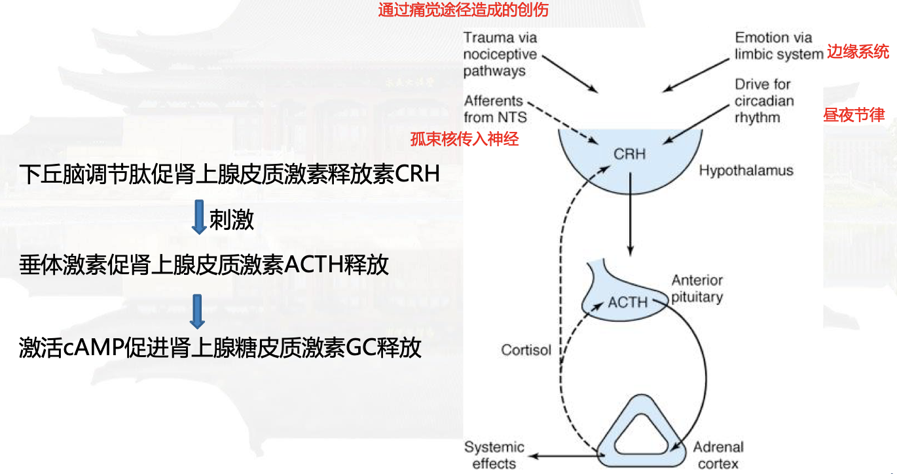
Cushing‘s syndrome—Hyperadrenalism
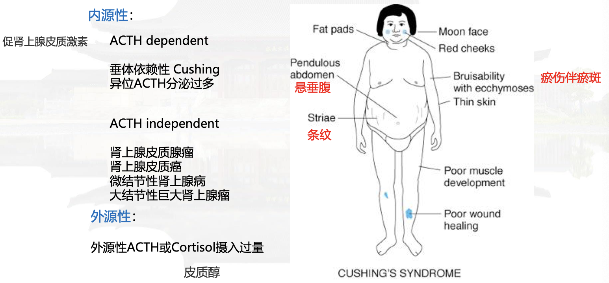
向心性肥胖
皮质醇促进脂肪分解，抑制脂肪合成。——四肢（对于皮质醇敏感）脂肪分解，皮下脂肪减少，加之肌肉萎缩——四肢纤细；皮质醇抑制葡萄糖的利用，促进糖异生使血糖增高——胰岛素分泌增加——促进脂肪的合成——面部和躯干（对胰岛素敏感）脂肪合成占优，形成肥胖
类固醇性糖尿病
拮抗胰岛素，抑制糖的利用，促进糖异生，使血糖升高
负氮平衡
蛋白质分解加速，合成减少，肌肉菲薄无力，毛细血管脆性增加——淤斑，皮下弹力纤维断裂，微血管扩张——皮肤紫纹，骨质疏松——病理性骨折（肋骨和胸椎好发）；伤口不易愈合
| 心血管系统 | 血管舒缩系统受抑制，高血压，左心室肥大，心力衰竭和脑血管意外 |
|---|---|
| 免疫系统 | 免疫力低下，各种感染，往往不易控制，易发展为败血症和毒血症 |
| 神经系统 | 肌无力，不同程度的精神、情绪变化，个别可发生类偏狂 |
| 性腺功能紊乱 | 高皮质醇血症直接影响性腺，抑制下丘脑分泌促性腺激素和垂体分泌黄体生成素，引起性功能功能减退 |
Addison’s disease—Hypoadrenalism
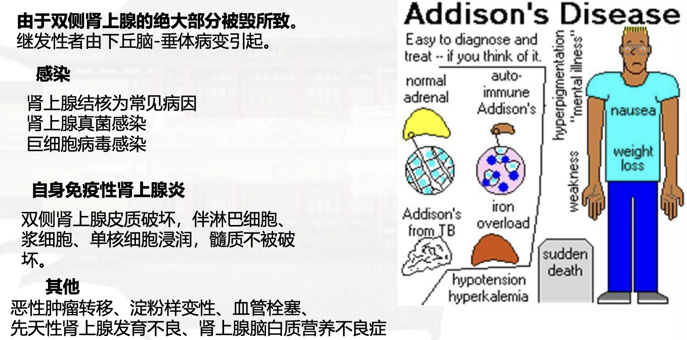
- 皮肤黏膜色素沉着
- 垂体负反馈减弱，ACTH、MSH、LPH分泌增多，全身的皮肤色素加深
Dysfunction of HPA axis
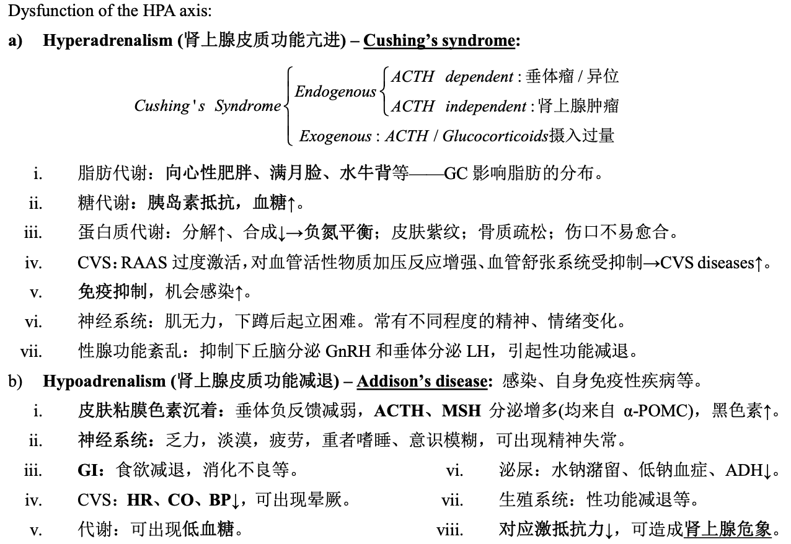
生长激素功能紊乱
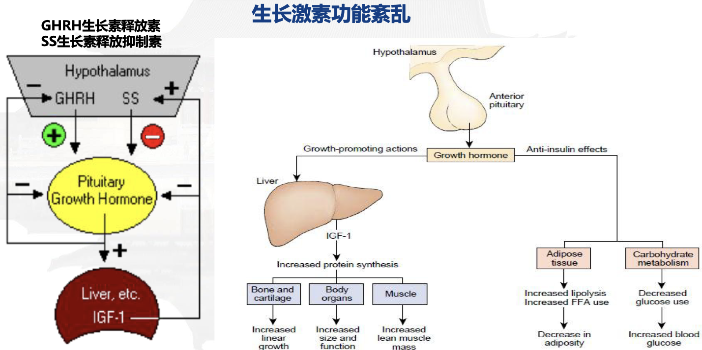
GH会抑制葡萄糖的摄取和利用，增加氨基酸的摄取和蛋白质的合成
Gigantism
青春期前由于体内生长激素的过度分泌，出现升高的过度增长，即使过了生长发育的阶段继续生长的一种临床病症
临床表现
单纯的巨人症比较少见，成年后半数以上继发肢端肥大症
常始于幼年，生长较同龄明显高大，持续长高直至骨骺闭合，肌肉发达，臂力惊人
当患者生长达到最高峰后，逐渐开始衰退
多数因为心血管疾病死亡
肢端肥大症
GH late in life
Causes excessive growth of flat bones
生长激素功能亢进
- 垂体肿瘤压迫
- GH过度分泌
抗利尿激素紊乱—Diabetes insipidus
尿崩症指的是精氨酸加压素（AVP）严重缺乏或者部分缺乏或者肾脏对AVP不敏感（肾性尿崩症），导致肾小管重吸收水的功能障碍，从而引起多尿、烦渴、多饮、低比重尿为特征的一组临床综合症
甲状腺功能紊乱
- 受体的分布
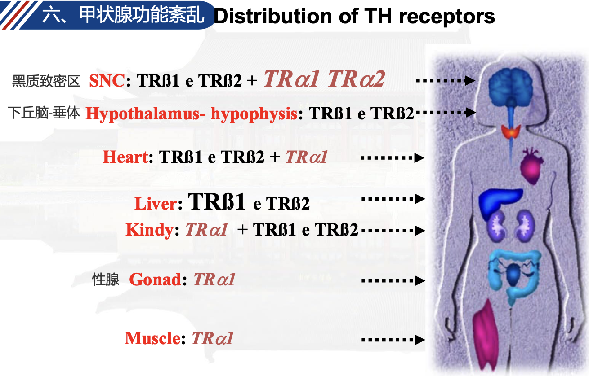
甲状腺激素的生物学功能
- 启动和维持机体细胞的分化和生长，尤其是儿童的生长、神经发育、保障中枢神经系统的功能
- 刺激线粒体用氧，线粒体单白和线粒体的生成
- 刺激组织代谢，发挥产热作用，刺激溶血和胆固醇代谢
- 影响心血管血流动力学和心脏的收缩和舒张功能
- 影响生殖系统的功能
甲状腺功能衰退—hypothyroidism
- 原发性甲减（甲状腺本身病变）
- 药物性甲减（硫脲类、咪唑类）
- 碘缺乏—呆小病、克汀病
- 先天性甲状腺激素合成缺乏
- 中枢型甲减（下丘脑和垂体病变）
- 先天性垂体发育不全
- 垂体大腺瘤
- 等
- 甲状腺激素抵抗综合征（甲状腺在外周组织发挥作用障碍）
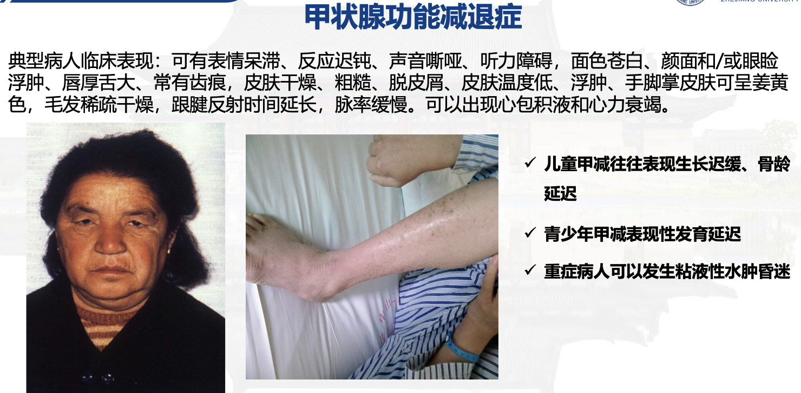
甲状腺功能亢进
甲状腺性甲亢—Graves病
- GD又称毒性弥漫性甲状腺肿，是一种器官特异性自身免疫性疾病。
临床表现以甲状腺肿大、高代谢症候群、突眼、胫前粘液性水肿为典型症状。
自身免疫：甲状腺内有TSH受体特异性的T细胞浸润，活化后释放细胞因子，其中IL-10刺激B cell分泌TSH受体抗体
垂体性甲亢—TSH甲亢
伴瘤综合征和HCG相关甲亢
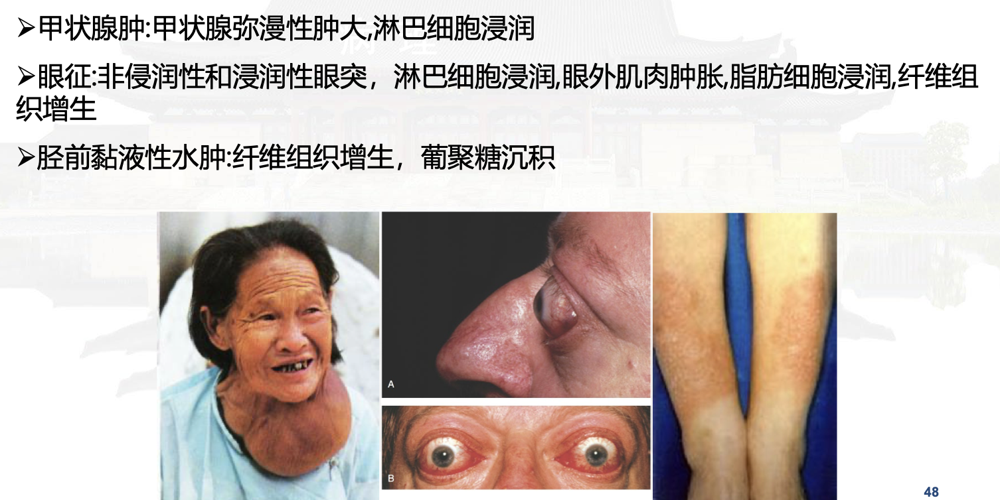
糖尿病
是一种由多种病因引起的代谢紊乱性疾病，其特点是由于胰岛素分泌，和/或胰岛素作用缺陷而导致的慢性高血糖，以及糖水化合物，脂肪，蛋白质的代谢紊乱。
I型糖尿病
是一种自身免疫性疾病，针对ß细胞和胰岛素的循环抗体
是由于环境因素在遗传易感人群中引发的，体液免疫和细胞介导免疫都会受到刺激
II型糖尿病
遗传和环境因素相互作用，影响胰岛素的分泌，产生胰岛素抵抗，骨骼肌摄取葡萄糖的能力受损
肝脏葡萄糖的生成增加
胰岛素抵抗
- 胰岛素受体底物IRS
- 葡萄糖转运受体GLUT4
- 胰岛素受体突变
- 解偶联蛋白突变UCP
ß细胞缺陷
- 葡萄糖激酶GCK基因突变
- GLUT2基因突变
- 线粒体障碍
- 等
糖尿病的临床表现
新陈代谢
- 代谢紊乱症候群
- 糖尿病性酮症酸中毒
- 高渗性非酮症糖尿病昏迷
- 糖尿病性视网膜病变
心血管
- 糖尿病血管疾病（微血管、大血管病变、糖尿病性心脏病、下肢坏疽）
肾
- 糖尿病肾病，毛细血管间肾小球硬化症
神经
- 糖尿病神经病变
抗糖尿病的药物
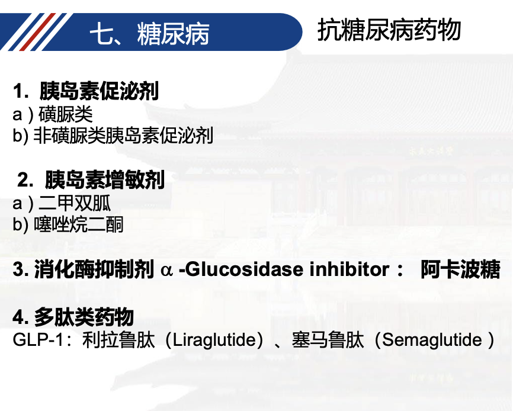
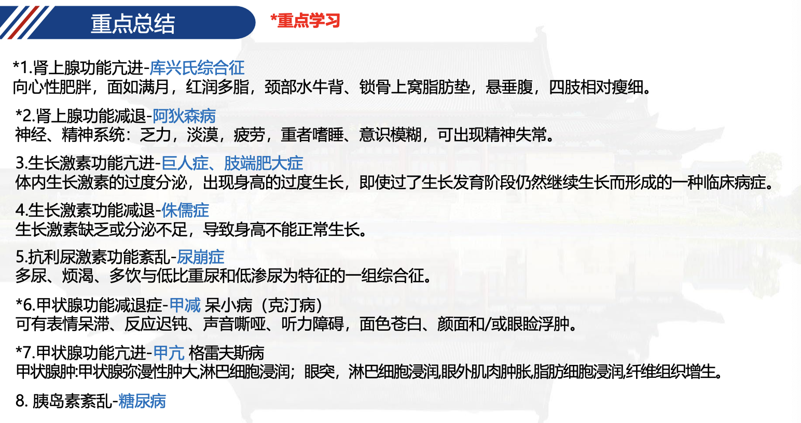
2-内分泌药理
甲状腺激素

甲状腺激素的合成
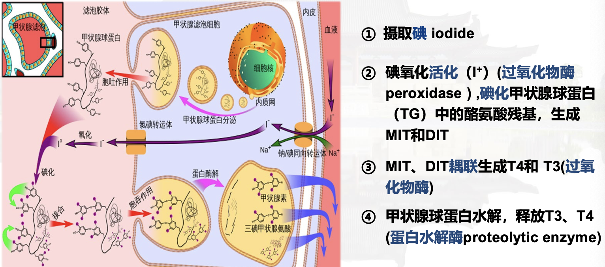
构效关系
外周：36%的T4会转变为T3，T3的生物学活性比T4大五倍左右
四碘甲状腺原氨酸——三碘甲状腺原氨酸（脱羧酶催化）
甲状腺激素的调节
TSH 促甲状腺激素
- 促进T4、T3分泌
- 刺激甲状腺组织增生，肿大
- 促进突眼症状加重
体内过程
- T3、T4于血浆蛋白结合率较高，可达99%以上
- 甲状腺激素可通过胎盘和进入乳汁，妊娠和哺乳期应注意
- 主要在肝、肾线粒体内脱碘，经肾排泄
- T3作用快而强，T4作用弱而慢
甲状腺激素的药理作用
- 维持正常生长发育
- 促进代谢和产热
- 提高交感神经系统的反应性：上调ß受体
- 心血管效应，直接参与心肌基因表达的调节
临床应用
-
克汀病、呆小病
-
甲状腺功能减退——（如，黏液性水肿）
-
从小剂量开始，逐渐增加至足量
-
垂体功能低下者应该先用糖皮质激素
-
避免肾上腺危象（Adrenal Crisis）
-
垂体功能低下可能导致促肾上腺皮质激素（ACTH）分泌不足，进而引发肾上腺皮质功能不全（即继发性肾上腺皮质功能减退）。
-
甲状腺激素
会加速全身代谢，增加机体对皮质醇的需求。若患者肾上腺皮质功能不全，此时补充甲状腺激素会进一步暴露
皮质醇缺乏，可能诱发：
- 低血压、低血糖、电解质紊乱（如低钠血症）
- 严重时导致肾上腺危象（表现为休克、昏迷甚至死亡）
-
-
昏迷者必须立即注射大量的T3，清醒后口服
-
单纯性甲状腺肿
-
治疗取决于病因
- 补碘——缺碘
- 手术——甲状腺结节
- 甲状腺激素——原因不明者
-
甲亢患者服用抗甲状腺药时加服T4有利于减轻突眼、甲状腺肿大及防止甲状腺功能低下
-
甲状腺癌术后应用T4，抑制残余的甲状腺癌变组织，减少复发
抗甲状腺药
硫脲类
- 硫氧嘧啶类
- 咪唑类
碘和碘化合物（大剂量）
ß肾上腺素受体阻断药
放射性碘

硫脲类
药理作用
- 抑制甲状腺素的合成：竞争性被甲状腺过氧化物酶氧化，进而抑制酪氨酸碘化和偶联的过程
- 抑制外周组织的T4—>T3的转化（PTU）
- 减弱ß受体介导的糖代谢：减少心肌、骨骼肌的ß受体数量
- 免疫抑制作用
临床应用
- 甲亢的内科治疗
- 甲亢的术前准备：PTU，降低甲状腺激素的水平，防止术后的甲状腺危象，使甲状腺变嫩
- 甲状腺危象的治疗：PTU，结合大剂量的碘剂，抑制T3/T4释放
不良反应
- 过敏
- 粒细胞缺乏症：最严重的不良反应
- GI反应
- 甲状腺肿（TSH增加，组织充血增加）及甲状腺功能减弱
- 哺乳期和妊娠期妇女禁用（PTU除外）
- 结节性甲状腺肿和甲状腺癌患者禁用
碘及碘化物
小剂量：促进甲状腺激素合成
短期(<2w)、大剂量使用
- 抑制甲状腺激素的合成和释放（抑制TSH，抑制GSH还原酶使甲状腺球蛋白对水解酶不敏感，抑制过氧化物酶，减少酪氨酸的碘化和偶联）
- 腺体缩小变韧，血管减少（抑制TSH）
- 长期使用作用消失，细胞摄碘自动降低；不能单独用于甲亢内科治疗
临床应用
单纯性甲状腺肿（小剂量）
甲亢的手术前准备：结合硫脲类药物（PTU），减少出血，预防甲状腺危象
甲状腺危象：结合硫脲类药物，减少甲状腺激素的合成和释放
不良反应
黏膜刺激反应、水肿
过敏反应
甲状腺功能紊乱
ß受体阻断药
药理作用
- 阻断ß受体，阻断交感神经激活
- 抑制T4脱碘
临床应用
甲亢的辅助治疗和术前准备，甲状腺危象的紧急处理
放射性碘
- 破坏甲状腺组织，射程短
- 适用于不宜手术或者手术后复发及硫脲类无效或者过敏的甲亢患者
- 用于甲状腺摄碘功能的检测
甲状腺危象的治疗
- 硫脲类
- ß受体阻断药
- 大剂量碘
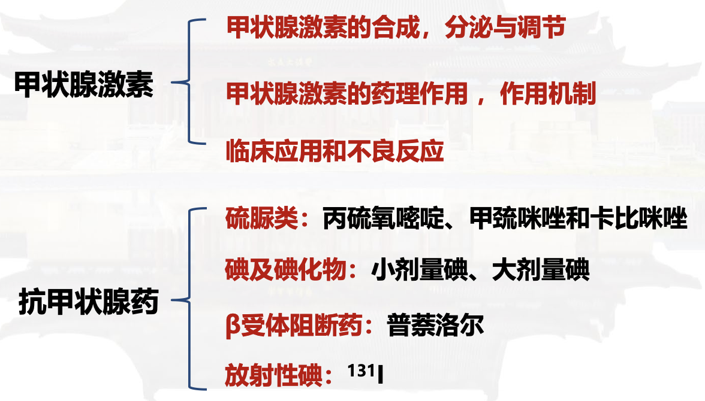
2-糖皮质激素药理
球状带——盐皮质激素
束状带——糖皮质激素
网状带——性激素
长期使用——抑制HPA轴——肾上腺萎缩
糖皮质激素存在昼夜节律，午夜时分泌最低，早上最多，通常早上服药，顺应机体分泌规律
| 时效 | 药物 | |
|---|---|---|
| 短 | 氢化可的松、可的松 | 类似于内源性， |
| 中 | 泼尼松、泼尼松龙、甲泼尼龙、曲安西龙 | |
| 长 | 地塞米松、倍他米松 | 抗炎作用强，长效糖皮质激素对于HPA轴的抑制作用强 |
体内过程
-
可的松在肝内代谢为氢化可的松、泼尼松代谢为泼尼松龙，方才有活性
-
肝药酶的诱导剂增加其代谢
作用机制
主要是基因组效应——但是慢
- 脂溶性分子、通过细胞膜
- 胞浆糖皮质激素受体GR——转位到核内
- 与GRE或nGRE结合
- 调节基因转录
更快的机制——非基因调控
- 膜GR/细胞膜/受体外成分
- 胞内通路
- 生物学效应
药理作用
- 代谢调控（主要是糖，大剂量时对于脂肪、蛋白质、水盐）
- 三抗
- 抗炎
- 抗免疫
- 抗过敏、抗休克
- 其他（允许作用、退热作用、血液和造血、CNS、骨骼）
代谢影响
- 糖异生
- 糖异生增强、葡萄糖氧化利用减少，导致血糖增加
- 蛋白代谢
- 蛋白质合成减少，分解增加，导致负氮平衡（肌肉消瘦，伤口愈合慢）
- 脂肪代谢
- 血浆胆固醇增加，脂肪重分布（向心性肥胖）
- 水盐代谢
- 保钠排钾、醛固酮样作用、升高血压
- 促进Ca的排泄，降低重吸收，增加H2O的排泄，抗ADH样作用
抗炎作用
- 减少炎症介质的产生
- 抑制细胞因子和粘附分子的产生和功能
- 诱导炎症细胞凋亡
- 早期降低血管通透性，减少炎细胞的浸润
- 晚期抑制成纤维细胞、肉芽组织、瘢痕生成，减轻“后遗症”，但是可能起到不好的效果
免疫抑制和抗过敏
- 诱导淋巴细胞核DNA降解
影响淋巴细胞的物质代谢
诱导淋巴细胞凋亡
抑制核转录因子NF-κB活性
- 减少5-HT、组胺、缓激肽的产生
缓解过敏反应
抗休克（感染中毒性）作用
- 抑制炎性因子的产生，改善微循环
- 扩张痉挛收缩的血管，兴奋心脏，加强心脏收缩力，稳定溶酶体膜
- 增加对细菌外毒素的耐受力（感染中毒性）
其他作用
- 允许作用——增强儿茶酚胺、胰高血糖素的作用
- 解热作用：内源性致热源减少
- 血液造血功能
- 等
临床应用
免疫相关性疾病
-
自身免疫性疾病
-
多发性皮肌炎（首选）、严重风湿热、风湿性关节炎、类风湿性关节炎、风湿性心脏病、骨关节炎、系统性红斑狼疮、肾病综合征
-
器官移植排斥反应
-
联合应用；若发生排斥反应，大剂量静脉滴注
-
过敏性疾病，通常不作为首选药，风疹、血清病、血管神经性水肿、过敏性休克（一般的过敏首选抗组胺药物或者肾上腺素）
吸入性糖皮质激素防治疗哮喘（布地奈德、倍氯米松）
严重的感染和炎症
- 急性严重感染，增加机体对有害刺激的耐受性，减轻中毒反应
- 短时、大剂量、联合使用有效抗生素、一般不用于病毒或者抗生素感染，除非合并了严重的脑水肿、肺水肿或全身症状
- 炎症后遗症的预防
- 防止粘连和瘢痕，如脑膜炎、心包炎、眼科疾病、关节炎
休克
- 对感染性休克需短时、大剂量、联合有效抗生素
- 过敏性休克应该首选肾上腺素
关节封闭针——糖皮质激素+利多卡因
不良反应
- 医源性肾上腺皮质功能亢进
- 过量的糖皮质激素引起脂质代谢和水盐代谢紊乱，表现为向心性肥胖（满月脸、水牛背），皮肤变薄，多毛，水肿，高血压，糖尿病，低血钾
- 诱发感染加重感染（免疫抑制）
- 消化性溃疡，出血、穿孔
- CVS：高血压、高脂血症、动脉粥样硬化
- 骨质疏松、肌肉萎缩、伤口愈合延缓，股骨头坏死
- 糖尿病
- CNS，行为异常，诱发癫痫和精神病
撤药反应
- HPA轴抑制（功能恢复长达2年）
- 医源性肾上腺皮质功能不全，肾上腺皮质功能危象
- 防治：缓慢停药，ACTH一周，及时给予足量的糖皮质激素
- 反跳现象
- 原有疾病恶化
禁忌症
-
精神疾病、癫痫、活动性消化性溃疡、骨折、肾上腺皮质功能亢进、高血压、糖尿病、病毒或者真菌感染
-
对于非重症的COVID-19患者，不建议在治疗时应用糖皮质激素
- 对于重症和危重症COVID-19患者，推荐全身糖皮质激素治疗
用法（全身/局部）
- 大剂量冲击疗法
- 小剂量替代疗法
- 一般剂量长期疗法，注意保护HPA轴
- 每日晨给药法：短效、可的松、氢化可的松
- 隔晨给药法：中效、泼尼松、泼尼松龙
- 局部用药：曲安奈德、倍氯米松、醋酸氢化可的松
盐皮质激素
- 常于氢化可的松等合用作为替代疗法，用于慢性肾上腺皮质功能减退症
促皮质激素
- 检测长期使用糖皮质激素停药前后的皮质功能水平
- 诊断脑垂体前叶—肾上腺皮质功能状态
皮质激素抑制药
米托坦
美替拉酮
氨鲁米特
临床应用
- Cushing‘s syndrome
- 治疗肾上腺皮质肿瘤

2-胰岛素及糖尿病药理
糖尿病的症状
三多一少（多饮、多尿、多食、体重减轻）
并发症
- 酮症酸中毒
- 高渗性非酮症性昏迷
慢性并发症
- 视网膜、肾病、心血管、神经病变、糖尿病足（由于下肢神经病变和血管病变导致的足部感染）
治疗糖尿病的药物
- 胰岛素
- 口服（其他）降血糖药
- 双胍类：二甲双胍
- 促进胰岛素分泌的药物：磺硫脲类
- 胰高血糖素样肽-1（GLP-1）受体激动剂：艾塞那肽
- 二肽基肽酶-4（DPP4）抑制剂：西格列汀
- alpha-葡萄糖苷酶抑制剂：阿卡波糖
- 胰岛素增敏药：噻唑烷二酮类
- Na-葡萄糖共转运体2抑制药：达格列净
胰岛素
药理作用
- 糖脂蛋白质代谢
- 加快心率，加强心肌收缩力，减少肾血流：血糖下降激活交感神经
- 促进钾离子进入细胞：降低血钾，稳定胞内钾——心内科的极化液，稳定胞内的钾离子
临床应用
- 1型糖尿病
- 2型糖尿病：血糖极高的初始治疗者，经过其他治疗血糖未能控制者
- 严重或急性糖尿病并发症：酮症酸中毒，高渗性非酮症性昏迷
- 糖尿病合并其他严重情况：高热，严重感染，妊娠创伤，手术
- 细胞内缺钾：严重的心肌缺血，强心苷中毒
胰岛素制剂
速效胰岛素
- 正规胰岛素
- 单组分胰岛素
- 赖脯胰岛素
可溶度高
起效快、作用时间短
餐前注射，用于餐后血糖高者，重症糖尿病初治及严重并发症者
中效胰岛素
中性低精蛋白锌胰岛素
珠蛋白胰岛素
Start working 1-1.5h after s.c. 皮下 injection, peak at 8-12h, and last
18~24h.
长效胰岛素
精蛋白锌胰岛素
甘精胰岛素
地特胰岛素
Start working 4-8h after s.c. injection, peak at 14-20h, and last 24-36h.
不良反应
- 低血糖：交感兴奋症状
- 过敏反应：治疗用H1受体拮抗剂，糖皮质激素，并用人或高纯度胰岛素替代
- 胰岛素抵抗：受体前、受体、受体后异常
- 脂肪萎缩：注射部位的脂肪萎缩用纯化制剂后减少该不良反应
- 其他：体重增加，屈光不正，水肿
双胍类Biguanides
Metformin二甲双胍（相对苯乙双胍更加安全）——联合用药的基础
药理作用
- 抑制肝脏的糖异生作用，减少肝脏葡萄糖的生成和输出
- 增加外周组织对于胰岛素的敏感性，促进胰岛素介导的葡萄糖的摄取和利用
-
减少肠道对于葡萄糖的吸收
-
通过激活AMPK磷酸化，ACC磷酸化增加（ß氧化增加，脂肪酸减少），脂肪生成基因表达减少，共同使得胰岛素敏感性增加，糖异生基因表达减少
临床应用
- 二型糖尿病的一线用药，特别是肥胖及单用饮食控制无效者，可降低心血管意外，对正常人血糖无影响，能降低食欲，减少体重
不良反应
- 胃肠道反应、乳酸酸中毒（苯乙双胍会抑制乳酸糖异生和氧化；但是二甲双胍会促进乳酸的氧化，不良反应没这么严重）
- 长期使用会导致VitB12缺乏
- 中重度肾功能不全，严重肝功能不全（乳酸酸中毒），严重感染，缺氧或接受手术者禁用
促胰岛素分泌药——易导致低血糖
- 磺酰药
- Gliclazide 格列齐特
- Glimepiride 格列美脲
- 非磺酰药
- Repaglinide 瑞格列奈
药理作用
- 促进胰岛素分泌，阻断ß细胞的ATP-sensitive K channel，增加Ca的内流，促进胰岛素的分泌
- 长时间使用增加胰岛素和受体的结合能力
- 激活糖原合成酶和3-磷酸甘油脂肪酰转移酶，促进葡萄糖合成糖原和脂肪
- 抗利尿作用（可用于尿崩症）
- 抗血小板的作用（格列齐特/格列美脲）
临床应用
- 2型糖尿病，适用于胰岛功能尚存的患者
- 尿崩症：氯磺丙脲
不良反应
- 胃肠道反应、肝损害、黄疸
- 白细胞、血小板减少、贫血
- 低血糖症（老人、肝肾功能不良者）
其他降血糖药
胰高血糖素样肽-1受体激动剂 GLP-1R agonists——保护心脏
GLP-1：肠促胰素
- 促进胰岛ß细胞增殖和分化
- 刺激胰岛ß细胞增殖和分化
- 抑制胰高血糖素分泌
- 减缓胃排空速率，增加饱腹感
- 利拉鲁肽适用于降低伴有心血管疾病的2型糖尿病成人患者的主要心血管不良事件
艾塞那肽Exenatide、利拉鲁肽Liraglutide、司美格鲁肽Semaglutide（长效、每周一次给药）
不良反应
- 尚不明确
- 不能用于甲状腺髓样癌
二肽基肽酶-4抑制剂 DPP-4 inhibitor
Sitagliptin西他列汀、vildagliptin维格列汀
- 抑制GLP-1降解、提高内源性GLP-1水平
- 单独或与其他降糖药合用治疗T2DM
- 口服吸收迅速，生物利用度高
胰岛素增敏药
噻唑烷二酮类Thiazolidinediones
罗格列净、吡格列净
药理作用
-
过氧化物酶增殖激活受体PPAR-gamma的激活物
-
改善胰岛素抵抗，促进葡萄糖转运至肌肉和脂肪组织，降低血糖
改善脂肪代谢紊乱
对血管并发症的防治作用
改善胰岛β细胞功能
临床应用
• 用于治疗胰岛素抵抗和2型糖尿病
不良反应
- 心血管事件和膀胱癌的风险
- 心衰和严重肝病者禁用
- 嗜睡、头痛、肌痛
- 水肿、体重增加
alpha-葡萄糖苷酶抑制剂
阿卡波糖、米格列醇、伏格列波糖
- 抑制寡糖分解为单糖，较少淀粉、双糖的吸收，降低餐后血糖
- 进餐时服用，控制餐后高血糖
- 不良反应:胃肠道反应（胀气、腹泻）
格列奈类
- 吸收快、起效快——>适用于降低餐后血糖
- 促进胰岛素的分泌，阻断ß细胞的ATP-sensitive K channel
钠-葡萄糖共转运蛋白2抑制剂（SGLT2i）——保护心脏
达格列净Dapagliflozin、 恩格列净Empagliflozin
- 选择性抑制肾近曲小管对于葡萄糖的重吸收，从而降低血糖
- 降压、减重
- 降低心血管死亡风险——心血管或者肾脏获益——往往有心血管病的糖尿病患者使用这个
不良反应
- 常见不良反应为生殖系统感染和血容量不足相关的不良反应
- 罕见的不良反应包括糖尿病性酮症酸中毒
Amylin analogues 胰淀粉样多肽类似物
- 抑制胰高血糖素分泌
- 减慢胃排空、延缓葡萄糖的吸收
- 增加饱腹感
临床用于辅助治疗，不能代替胰岛素
增加严重低血糖的风险
可引起关节痛、咳嗽、头晕、头痛
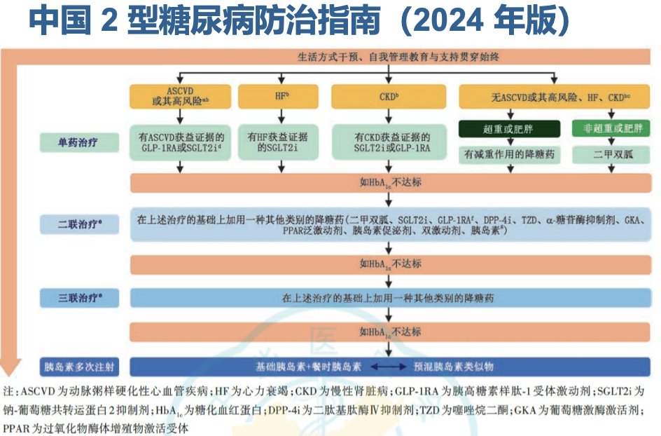